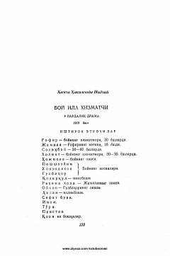

BIBoylar va xizmatchilar o'rtasidagi ijtimoiy ziddiyatlarni ochib beruvchi klassik drama.
Hamza Hakimzoda Niyoziyning ushbu mashhur dramasi boylar va xizmatchilar o'rtasidagi ijtimoiy tengsizlik hamda o'sha davr jamiyatidagi ayanchli vaziyatni tasvirlaydi. Asar voqealari boy xonadonidagi murakkab munosabatlar va xizmatchilarning og'ir taqdiri atrofida rivojlanadi.